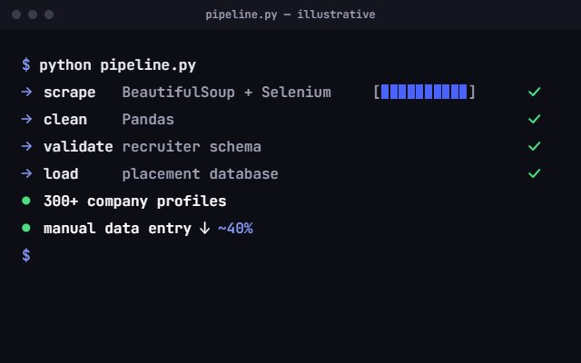

I'm Mohit Sehrawat, an ai/ml Developer
AI tools, data pipelines and full-stack builds.
Open to internships
& entry-level roles.
01 — The short version
About
I'm Mohit Sehrawat, a CSE (AI) student in Gurugram who builds AI-powered tools and ships them as real, working apps. I lead the team behind a 300+ company placement database , I've tested web and mobile products before launch, and I build accessibility audits that say exactly what to fix. Next: an internship or entry-level role.
- National-level hackathons, each a 24–36 hour build See them
- 5+hackathons
- Company and recruiter profiles in the placement database my team maintains TPO role
- 300+ company and recruiter profiles
- Manual data-entry time saved by the pipelines I automated How
- About 40% less manual data-entry time
- Projects with public code on GitHub Open
- 3projects
02 — Selected work
Proof ofwork
Three projects. All of the code is public.
GitHub03 — Toolkit
What Ibuild with
From scraping pipelines to Gemini-powered apps. Pills marked with a dot are used in the work on this page.
Full list- Python
- TypeScript
- Next.js 15
- Gemini API
- Tailwind CSS
- JavaScript
- Node.js
- Pandas
- Selenium
- BeautifulSoup
- TensorFlow
- scikit-learn
- OpenCLIP
- SQL / MySQL
The fulllist
- Languages
- Python, C++, Swift
- Web
- HTML, CSS, JavaScript, TypeScript, Next.js 15, Tailwind CSS
- AI / ML
- TensorFlow, Google Gemini API, OpenCLIP, GLM, scikit-learn
- Data
- Pandas, BeautifulSoup, Selenium, Excel
- Databases & VCS
- SQL, MySQL, Git, GitHub
- Tools
- Android Studio, VS Code, Postman, Framer Motion, Radix UI, MS Office
Also: communication, attention to detail, team leadership, problem solving.
04 — Experience
Experienceso far
A campus leadership role, a product-testing internship, and the degree that ties them together.
Full résumé (PDF)Head of Data Collection
Mar 2026 → PresentTraining & Placement Office, Gurugram University

- Lead a cross-functional team of 4–5
- Scrape with BeautifulSoup and Selenium, clean with Pandas
- Automated data pipelines cut manual data-entry time by ~40%
- Designed a standardised schema for recruiter records
- Weekly reports to TPO faculty on data health, recruiter engagement and drive readiness
- Python
- Pandas
- Selenium
- BeautifulSoup
Junior Tester
Internship · Jun → Sep 2025Rational Go
- Caught functional bugs, UI/UX inconsistencies and edge-case failures before launch
- Documented test cases and defect reports that helped reduce post-launch critical issues
- Validated fixes and rollouts against acceptance criteria in sprint reviews with designers and developers
- QA
- Test cases
- Sprint reviews
B.Tech, CSE (AI)
Expected 2027Gurugram University
- Class XII, Science (PCM + CS), CBSE, 2022: 84%
- Class X, CBSE, 2020: 79%
- Both at Prince Academy of Higher Education
05 — Hackathons
Built in24–36 hours
5+ national-level hackathons, each one a 24 to 36 hour window to build a working product and pitch it.
HackUtsav 1.0
Hacked 3.0
BML Munjal University
Hacked 4.0
BML Munjal University
Hackverse
IILM University
Code for Bharat
Project write-ups and dev notes live on LinkedIn.
LinkedInAlso — On the side
On theside
In my own words
Passionate about solving real-world problems through machine learning, automation and full-stack development.
Peer mentor
Coding club mentor
In my university's coding club I help juniors with Python fundamentals and their first open-source contributions.
Open source & write-ups
Building in public
Active open-source contributor on GitHub. I share project write-ups, dev insights and tech discoveries on LinkedIn.